This was three week project for Meetinghero to implement new features and redesign for usability.
My client for this project was Meetinghero, a web app that provides a note-taking format to collaborate in real time during meetings. The app was launched recently, and is currently in Beta.
My design partner in this project was Affan Khokhar.
From our meeting with the co-founder and CEO, we were given a list of features to implement, but also given some freedom in regards to researching usability issues. He had gotten a lot of feedback on the app in email form, but had not been able to do user testing in person.
From this we put together a list of things to focus on:
To begin our process, we asked various people to set up a meeting using Meetinghero and then use the app to take notes during their meeting. We asked them to speak out loud during their process, and we took notes and asked questions.
We found that there were some unforeseen usability issues with some of the UI elements on the page, as well as a confusing flow.
This is a video of some of the user testing we did, illustrating the difficulties with the onboarding process.
This is a mental model diagram I put together on how users and the stakeholders expect the app will work:
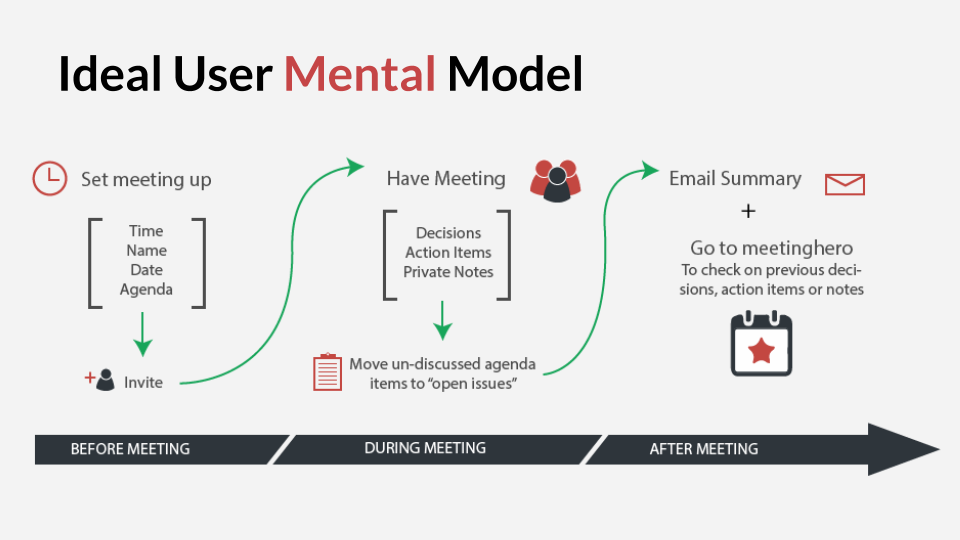And this is a diagram of how it currently flows, especially for those new to Meetinghero:
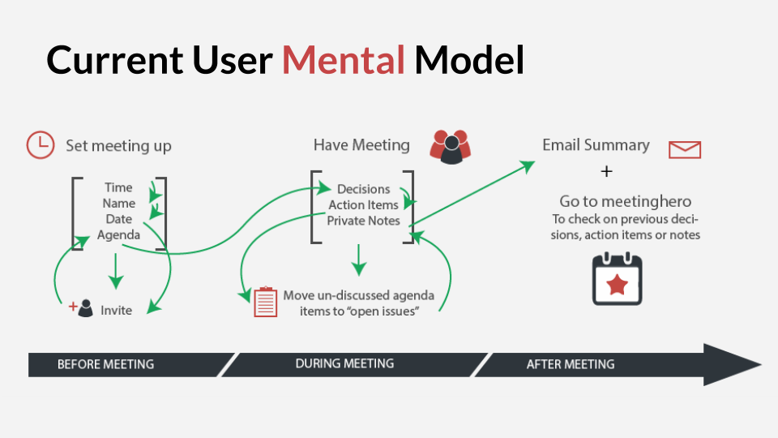After we tested, we began to see patterns of usability and flow issues emerge, and I created this user journey map to illustrate them. The top of this map shoes the journey and the emotions and issues along the way, and the bottom is the design solutions for those issues.
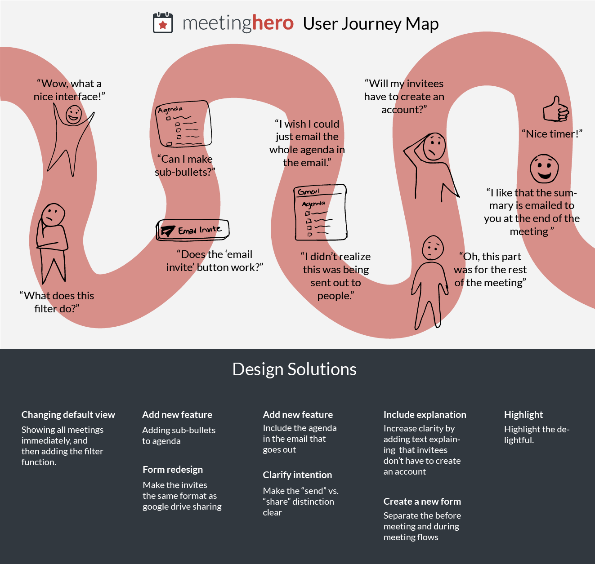From our meeting with the co-founder, we found out who are the main users of Meetinghero, and then interviewed people in those categories to come up with these specific personas.
 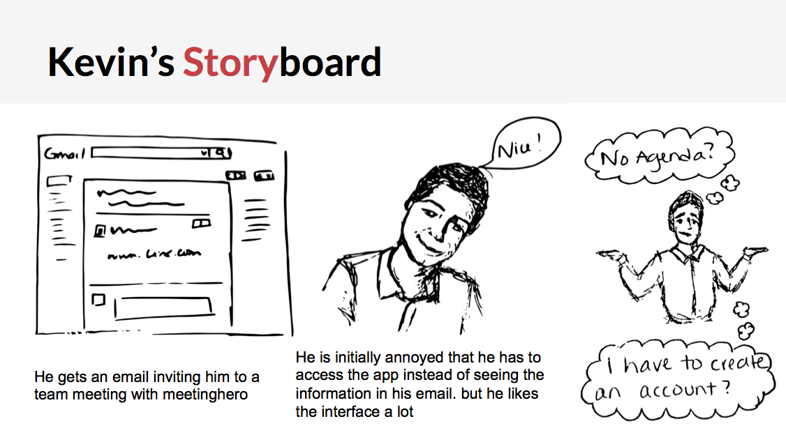
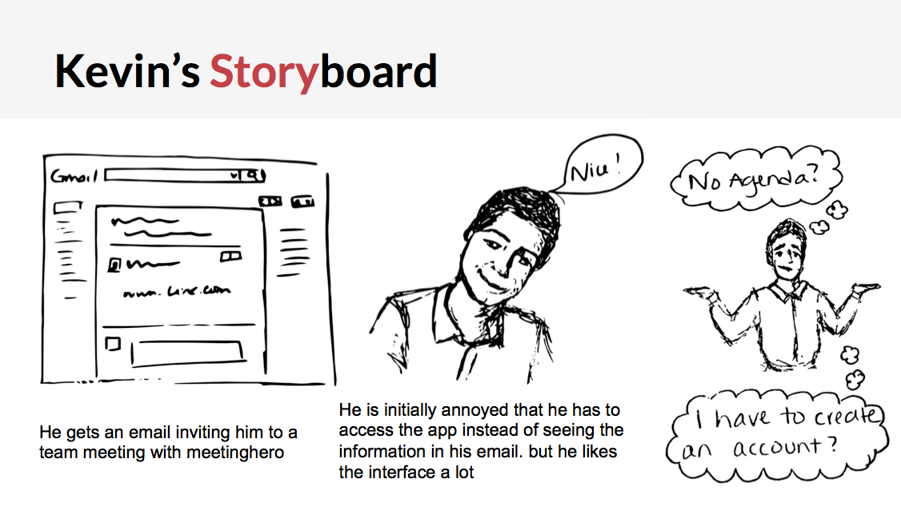
As illustrated with the diagrams above, the flow for the meeting was especially confusing for first time users. Many thought they had to fill out the entire meeting notes format before they could send out the invitations. To fix this, we moved the meeting creation and information editing portion into a completely separate flow. We decided it would be better to put this portion of it, in a light-box form with very clear calls to action.
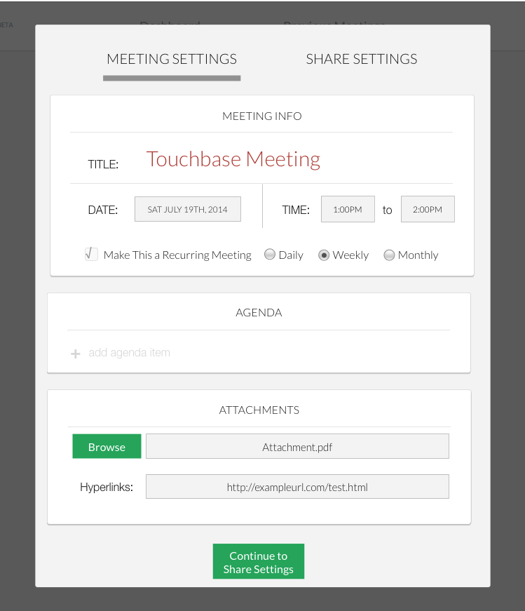Users were also unsure of what each of the elements in the note-taking format meant. To solve this we added some explanation text to each element so that the users would immediately know what they were for.
This is the current note taking format:
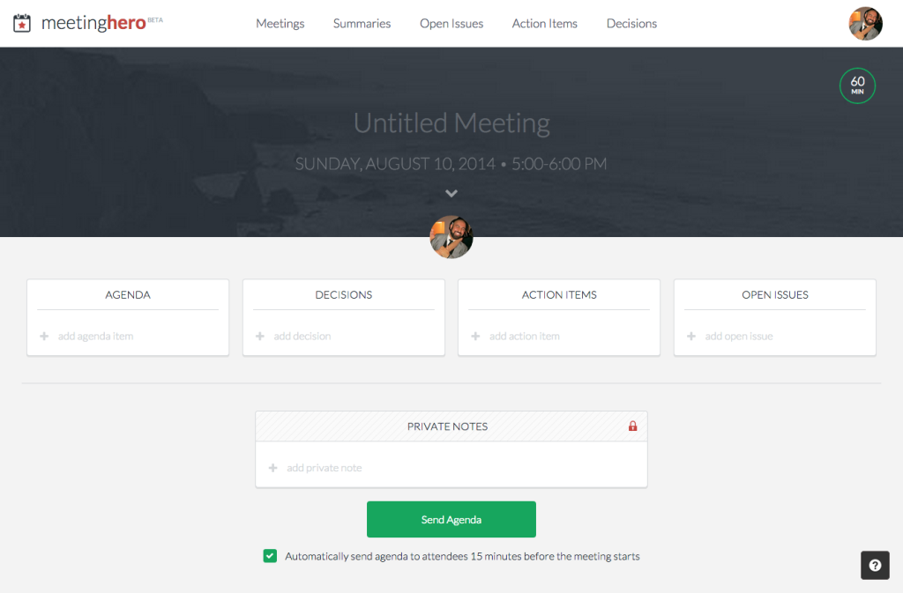Here is an example of some of the changes we made:
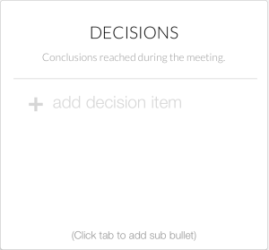The most requested feature was the ability to assign action items to people in the meeting. We did this by giving users a choice of meeting attendees upon hovering over the "+" at the end of the action item line, then clicking on the face.
We thought that since users were currently signing up with Gmail to use the app, we would keep the share settings similar to the Google Drive share settings, so it would be familiar to the users. This way, when they add attendees they can dictate who they would like to invite, and who they only want to send the agenda to. This would also allow sending from a gmail address instead of always copying the link.
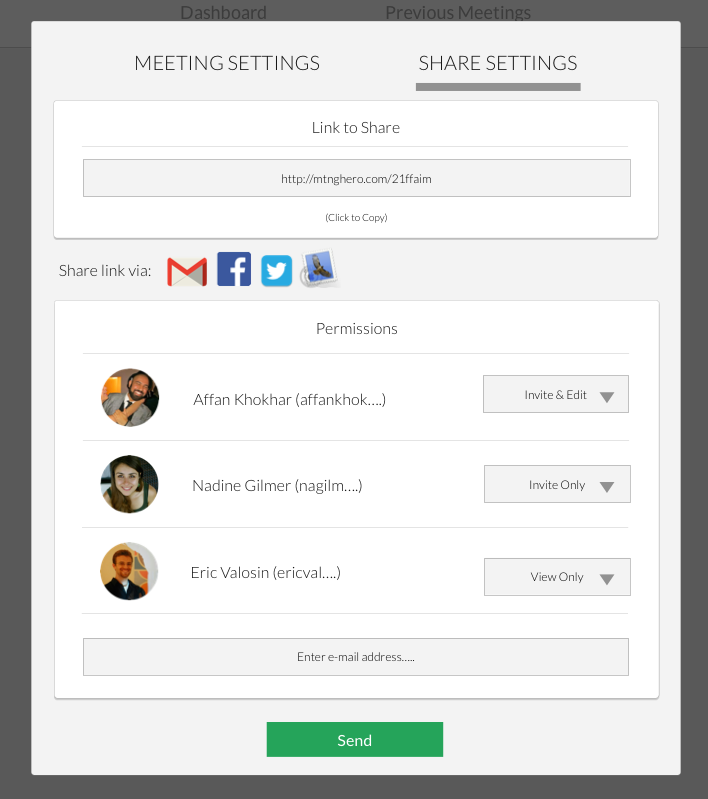Our stakeholder wanted to be able to show that a user got the agenda, and is ok with it, and is attending. He also wanted there to be different permissions. This means that some people would only get an Agenda to look over and some would be official invitees to the meeting. To do this, we changed the links in the email to this:
For people who were invited to the meeting:
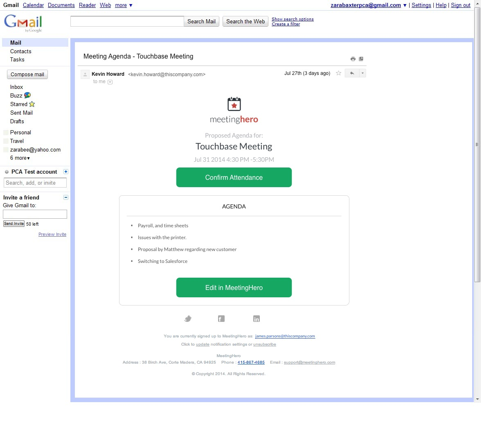For those who were sent the agenda only:
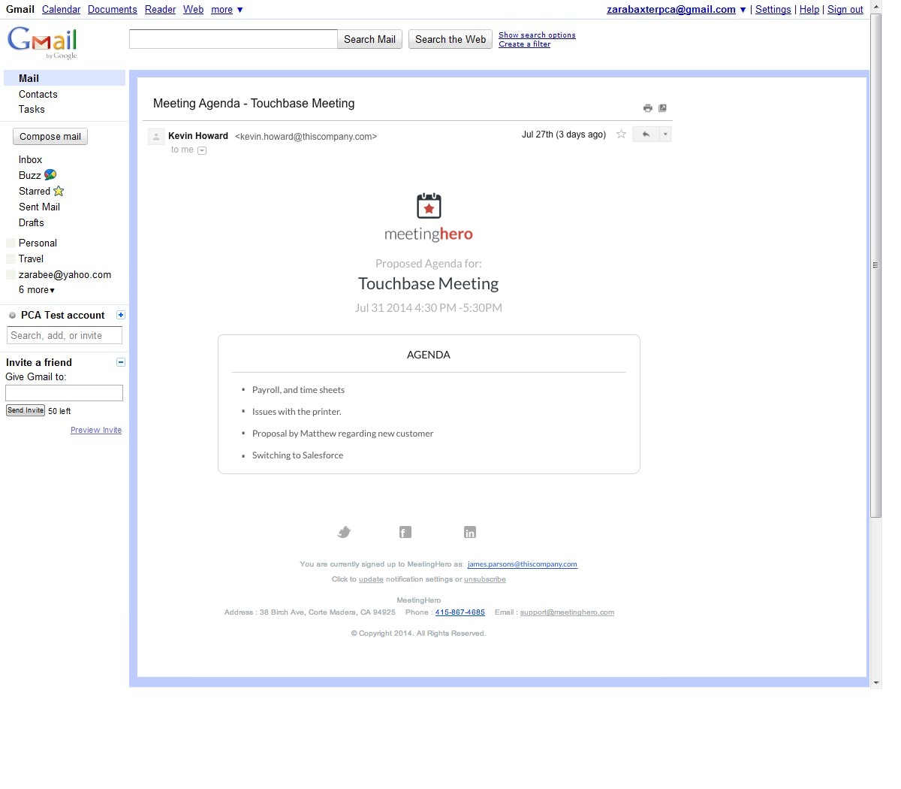 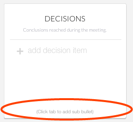Many users want to be able to create nested items in the lists. We thought the simplest way to do this would be to create them the way most programs do: by entering to create a new line bullet, and tabbing to nest the item.
Users wanted to have a recurring meeting agenda, so we added the option in the meeting creation/settings page box.
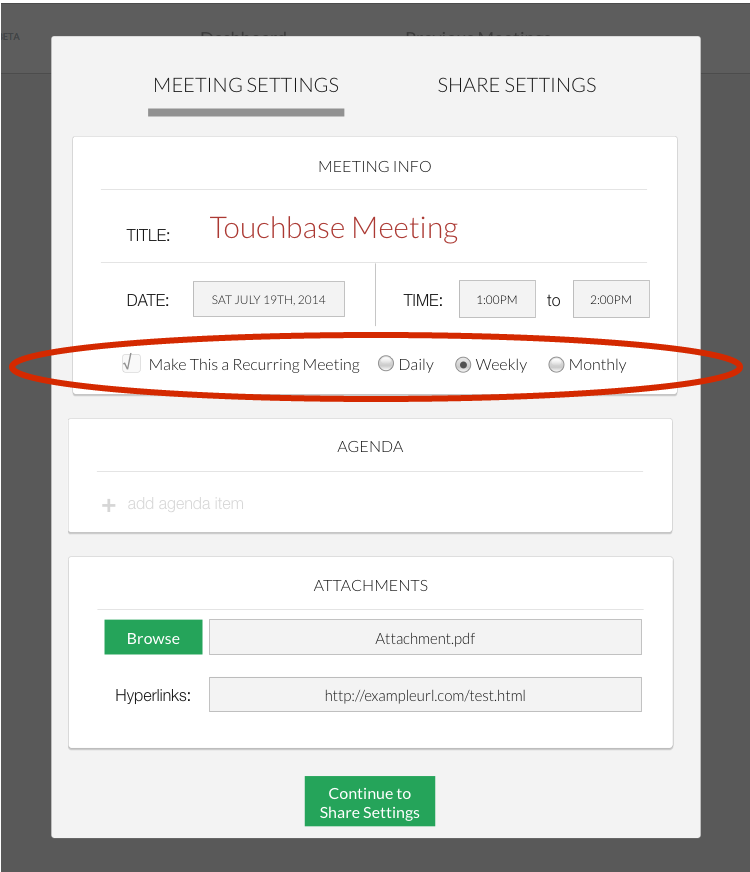
One of our tasks was to create a timer for each agenda item as well as the overall meeting timer. We knew that users were particularly fond of the current design, and the developers behind it already knew how to make it, so we didn't want to stray too far from the original. After several concepts we came up with this:
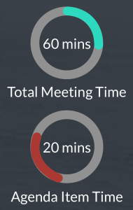 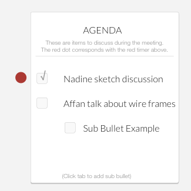The red dot by the agenda signifies with agenda item is currently being discussed.
We began our design process by changing the dashboard and navigation of the app, because we felt that users were confused when they came to the home page, and it was difficult to locate what they needed from past meetings. From what we understood from the mental model, and testing on our designs, the app would benefit from a dashboard. However, we realized it would be hard to implement the features our stakeholders requested from us on top of huge changes to the app, so we left them aside, and delivered them as suggestions to be implemented at a later time.
Currently, the filter on the main page seems unintuitive to most users. We proposed an edit so that it would filter by calendar rather than meetings with two or more people.
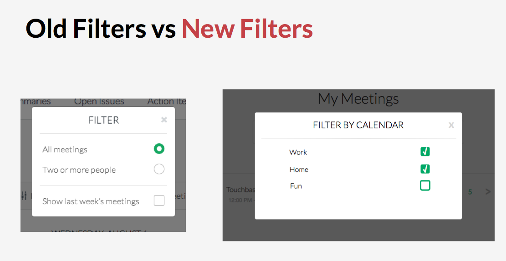Useability and feature change prototype:
View prototypeBonus UX/UI suggestions prototype:
View prototype